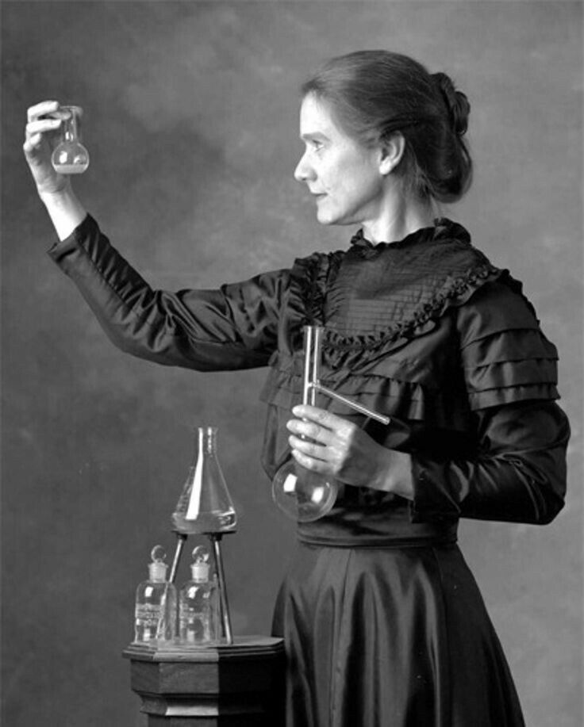

Marie Curie

Marie Curie byla slavná vědkyně, která objevila radioaktivitu. Získala dvě Nobelovy ceny a významně přispěla k rozvoji vědy.
Mezinárodní den žen (MDŽ) se slaví každoročně 8. března. Tento den připomíná boj žen za rovná práva, lepší pracovní podmínky a rovnoprávnost ve společnosti. Dnes je MDŽ také příležitostí ocenit úspěchy a přínos žen v různých oblastech života.
Počátky Mezinárodního dne žen sahají do začátku 20. století, kdy ženy v různých zemích protestovaly za volební právo a lepší pracovní podmínky.
Dnes je MDŽ příležitostí připomenout si rovnost žen a mužů, podpořit práva žen a oslavit jejich úspěchy ve společnosti, vědě, politice nebo kultuře.
| Dříve | Dnes |
|---|---|
| Protesty za volební právo | Diskuze o rovnosti a právech žen |
| Boj za pracovní podmínky | Oceňování úspěchů žen |
| Demonstrace a stávky | Konference, vzdělávání a oslavy |

Marie Curie byla slavná vědkyně, která objevila radioaktivitu. Získala dvě Nobelovy ceny a významně přispěla k rozvoji vědy.
Milada Horáková byla česká politička a bojovnice za lidská práva. Postavila se komunistickému režimu a stala se symbolem odvahy.
Rosa Parks byla americká aktivistka, která se stala symbolem boje proti rasové diskriminaci v USA.
„Nikdy nesmíte mít strach z toho, co děláte, když je to správné.“
- Rosa Parks
Více informací o historii MDŽ: